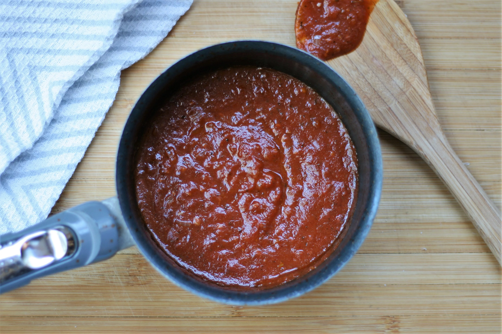

Pizza Sauce Recipe

Description:
You can make this quick pizza sauce while your crust is baking. This makes about enough sauce for 1 pizza.
Ingredients:
- 2 teaspoons olive oil
- 1/4 cup onion, diced
- 1 clove garlic, diced, or more to taste
- 1 teaspoon Italian seasoning, or to taste
- 1/4 teaspoon crushed red pepper flakes, or to taste
- 1 spash red wine (Optional)
- 1 (8 ounce) can tomato sauce
Steps:
- Heat olive oil in a small pot over medium-high heat. Saute onion, garlic, Italian seasoning, and red pepper
flakes in the hot oil until onions start to soften, about 5 minutes. Add a splash of red wine; stir for a few seconds.
Add tomato sauce and stir.
- Reduce heat to low and let simmer for 10 minutes